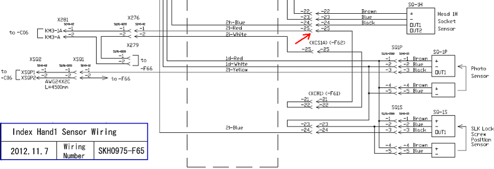
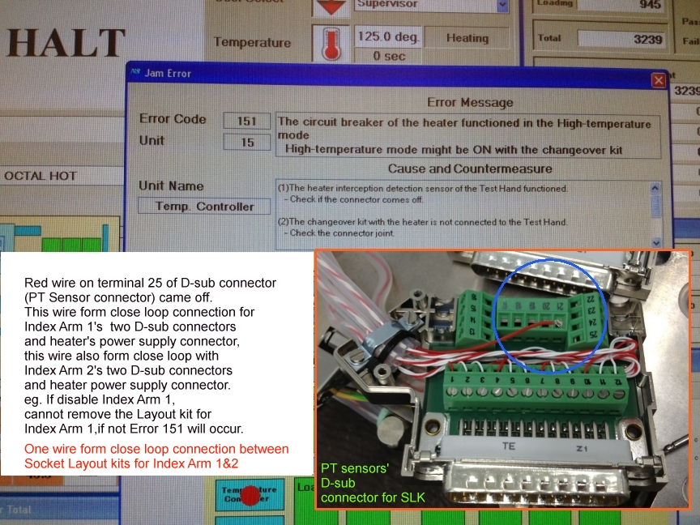

Service History
Subject: Unable to turn on Hot mode, Error 151 Unit 15 occurred
Handler Model: NX1032XS (S/N: 182347)
Controller: RC520 (S/N: 00504), DUBOX030 (S/N: 100004), PSUNT353 (P892)
Date: 22 Nov 2012
Symptom
When turning on Hot mode for NX1032XS unable to turn on the heater.
Error 151 Unit 15 occurred;" The circuit breaker of the heater functioned in the High-temperature mode. High-temperature mode might be ON with the changeover kit".
Action
It was found that in the D-sub connector on the Socket Layout Kit (SLK) Index Arm 1 that has PT sensors wires, one wire at terminal 25 came off.
This wire form a close loop that will disable the turning on of heater, if the wire is broken/disconnected.
See wiring diagram SKH0975-F65.


Cause
Close loop wire in D-sub connector for Index 1 SLK wire disconnected, prevent heater from turning on.